# 2-入门案例
# 下载依赖
进入Spring官网，在Project下找到Spring Framework：
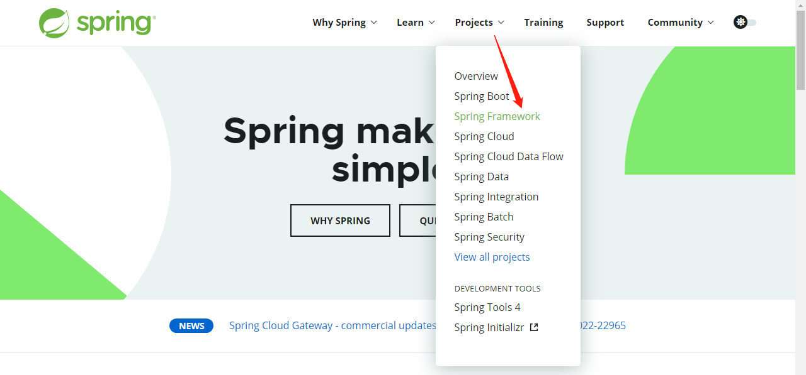
选中LEARN后，会显示Spring的文档和API界面，其中GA表示正式版本，SNAPSHOT表示快照版本：
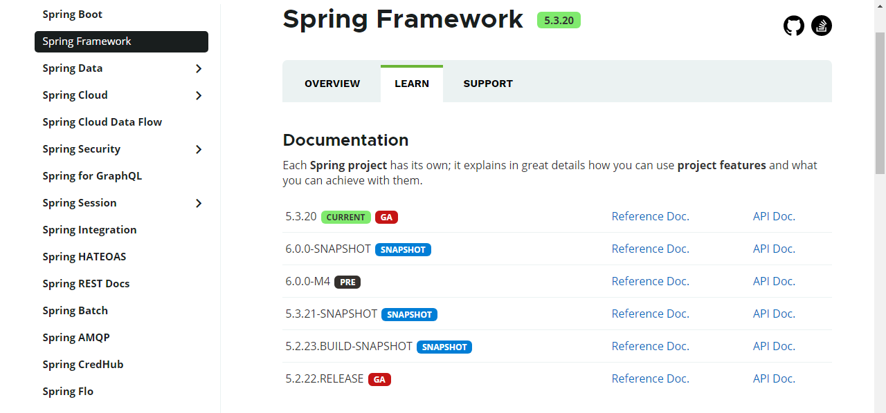
点击github进入到Spring的官方仓库，并点击进入Spring Framework Arthritis：
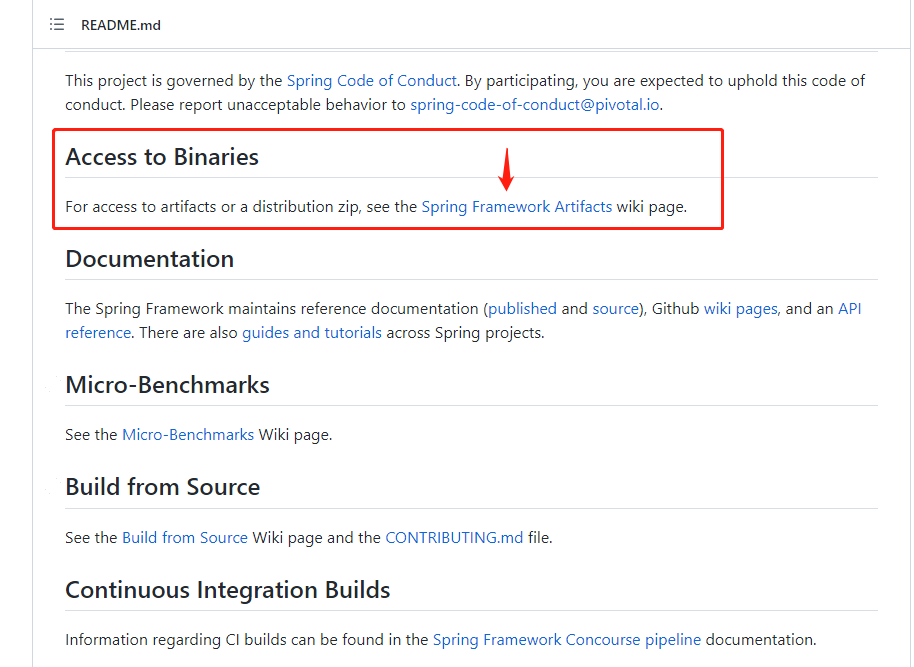
进入Spring Framework Arthritis后，进入Spring仓库：
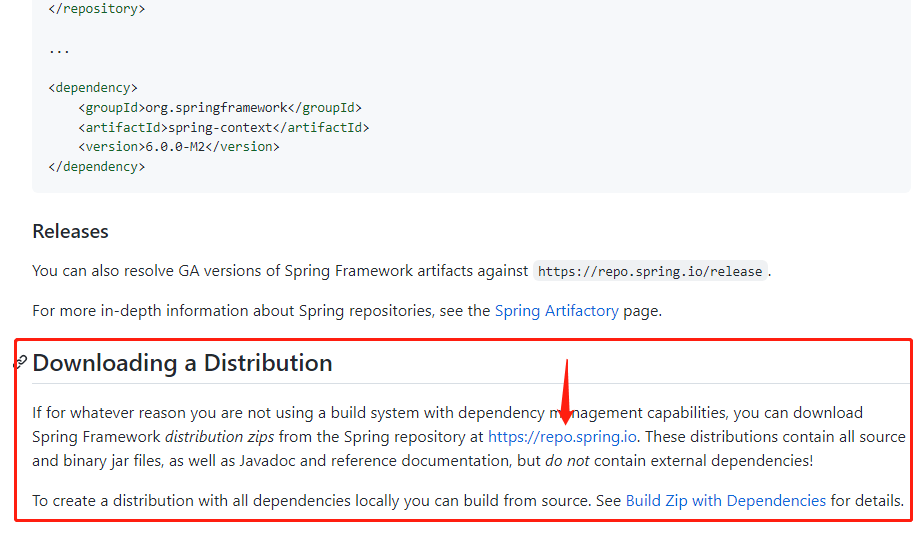
在Spring repo中，点击Artifactory-Artifacts-release-org-springframework-spring，即可在右侧见到URL to file，表示Spring仓库地址：
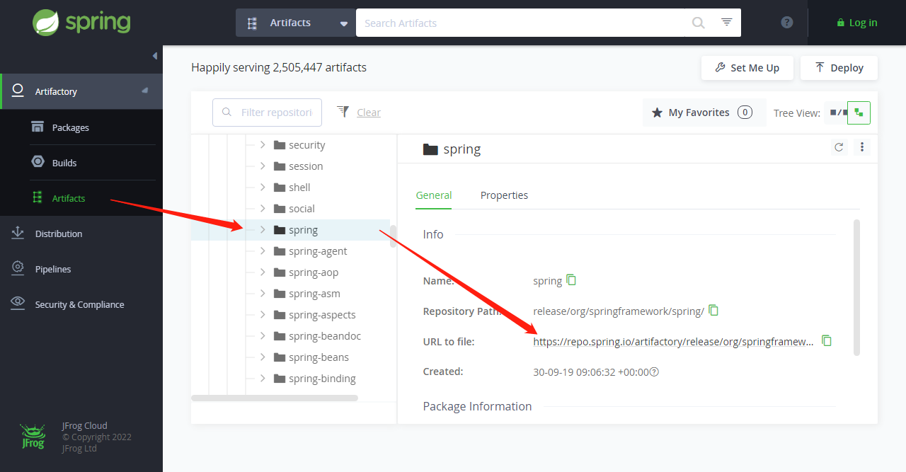
根据在第二步中确定的最新稳定版本，点击进入相应的链接：
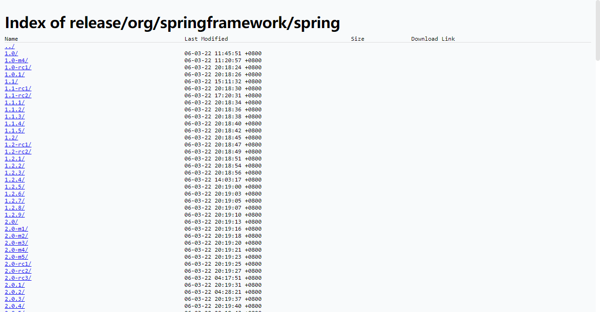
点击spring-x.x.x-dist.zip进行下载，将获得一个压缩包，其中就是Spring的所有依赖：
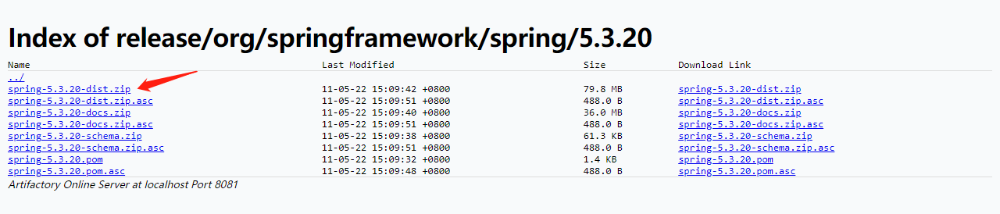
依赖目录：
- docs：文档文件；
- libs：相关依赖jar包，sources.jar是源码包，javadoc.jar是文档包，另外是编译后包；
- schema：xml约束规范；
下载Spring所依赖的common-logging日志依赖，访问Apache Commons Logging (opens new window)官网，并选择Download下载Binaries资源：
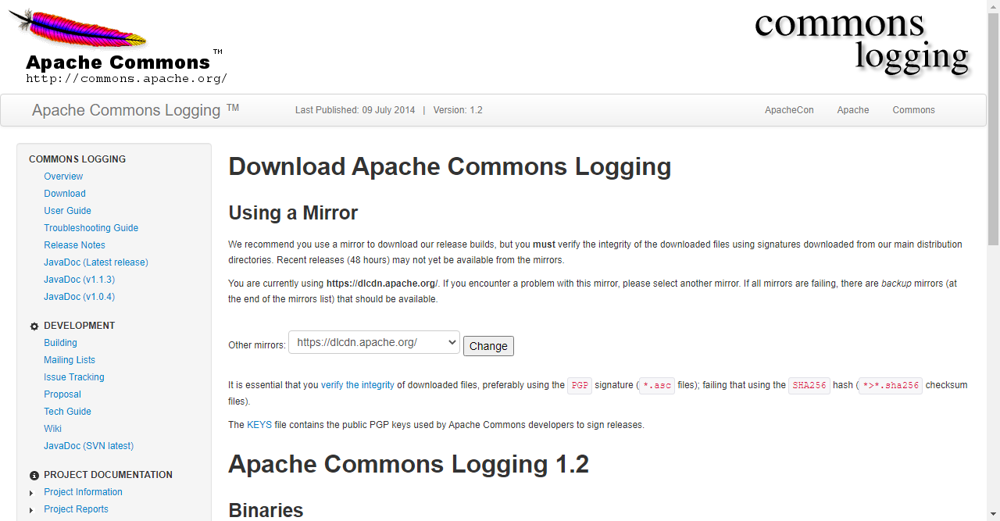
# 创建项目
打开idea工具，创建普通Java工程：
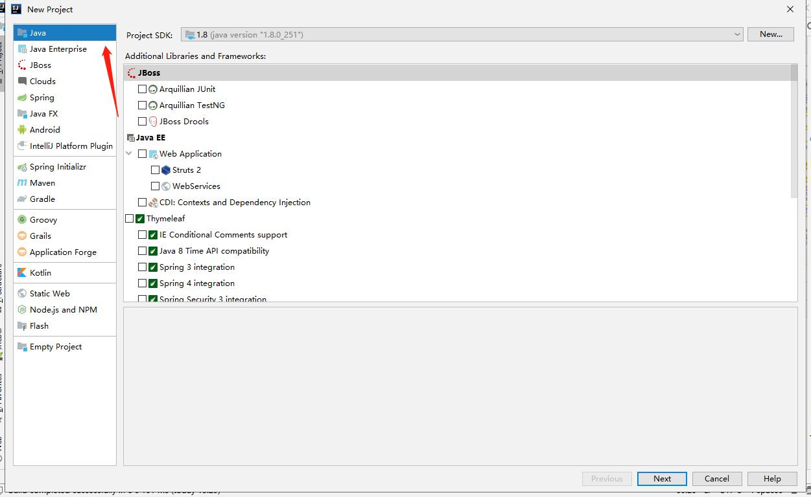
导入Spring所依赖的jar包，注意只导入编译后的jar包。只导入基础模块做测试，并依赖一个common-logging作为日志支持：
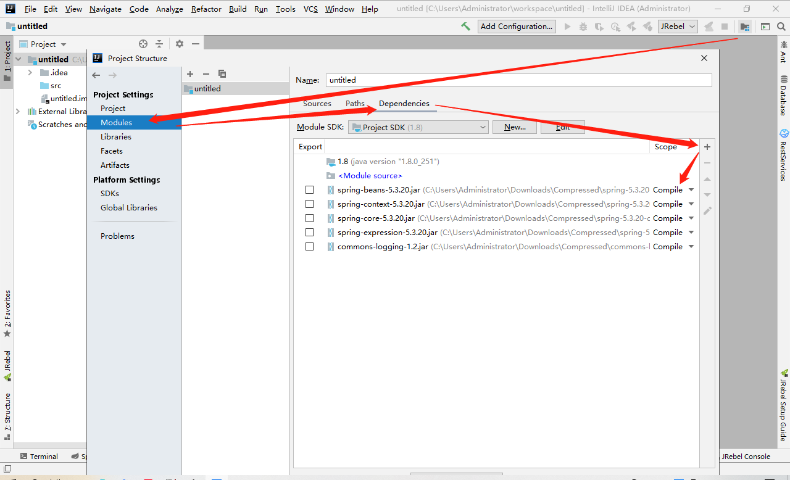
创建类并填写内容：
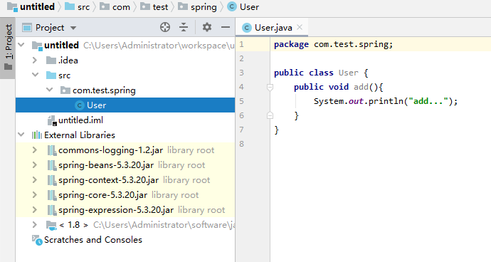
在src中创建Spring的xml配置文件：
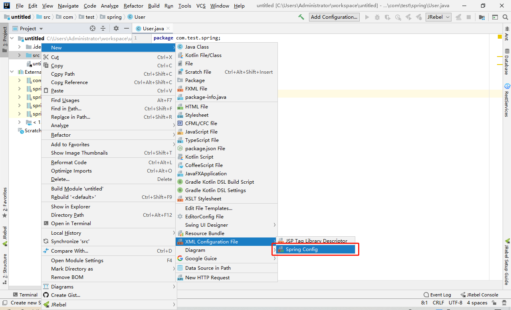
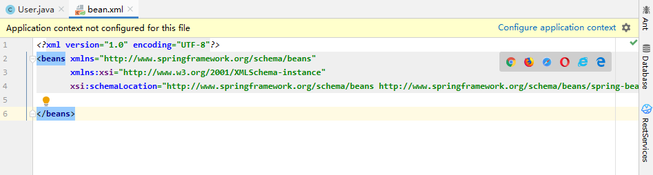
创建配置文件中的内容，bean标签id自拟，class为第三步中创建的类的全路径：
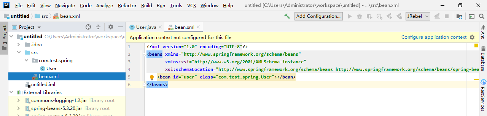
创建测试主类，测试类仅用作框架运行测试，实际生产并不会出现类似代码：
import org.springframework.context.ApplicationContext; import org.springframework.context.support.ClassPathXmlApplicationContext; public class Test { public static void main(String[] args) { // 1 加载Spring配置文件(bean.xml文件应在项目src目录下) ApplicationContext applicationContext = new ClassPathXmlApplicationContext("bean.xml"); // 2 获取配置创建的对象 User user = applicationContext.getBean("user",User.class); // 3 执行对象方法 user.add(); } }1
2
3
4
5
6
7
8
9
10
11
12
13
14
15此示例将User对象由Spring ApplicationContext进行创建，表现出Spring IOC控制反转。